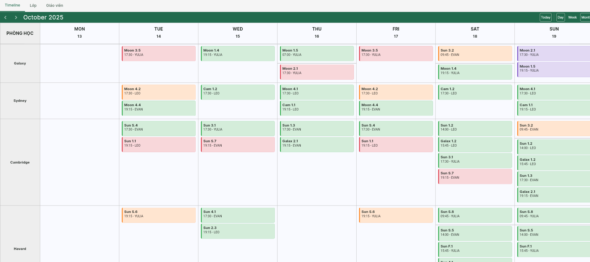
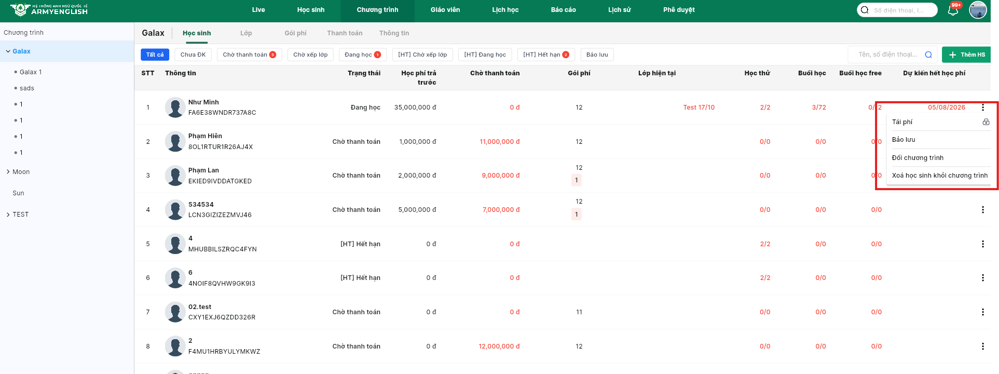

Lưu ý
- Học sinh của sale nào, chỉ sale đó thao tác được những vấn đề liên quan checkin, nhập kết quả test, đăng ký học, lịch sử chăm sóc.
- Ngoài sale trực tiếp học sinh ra, giám đốc trung tâm có thể xem được các học sinh thuộc sale đó, nhưng không thao tác được.
- Việc nạp tiền vào tài khoản, việc hoàn tiền, việc bảo lưu hay đăng ký chương trình tất cả đều được Giám đốc trung tâm phê duyệt. Sau khi giám đốc trung tâm phê duyệt hệ thống mới ghi nhận hành động đó.
- Các thao tác trên 1 học sinh từ việc nạp tiền, đăng ký, thanh toán, thay đổi nv phụ trách .. đều được ghi lại ở phần 'Lịch sử' trong màn thông tin học sinh.
- Nghỉ học có phép → Không tính học phí cho buổi đó.
⚠️ Lưu ý: Chỉ được xử lý tích nghỉ phép trong đúng ngày có buổi học. - Nghỉ học không phép → Dù có điểm danh hay không, vẫn bị tính học phí cho buổi đó.
👉 Hệ thống mặc định tính phí (dù đi học hay không).
➡️ Nếu muốn không tính phí, phải tích “nghỉ phép” trong ngày hôm đó.
CHÚ Ý VỀ VIỆC ĐIỂM DANH, TÍNH HỌC PHÍ
🔑 Đăng nhập
- Truy cập crm.armyenglish.edu.vn.
- Nhập Tên đăng nhập và Mật khẩu được cấp → bấm Đăng nhập.
- Bấm avatar góc phải → Chỉnh sửa thông tin cá nhân → cập nhật Email, Địa chỉ, Giới tính, Ảnh đại diện → Cập nhật.
📅 Ghi chú trạng thái lịch học
Màu sắc hiển thị trên lịch giúp phân biệt trạng thái buổi học và tình trạng lớp học. Dưới đây là quy ước:
Trạng thái buổi học
- Type 1 – Hủy: xám
- Type 2 – Đang diễn ra hôm nay: vàng nhạt
- Type 3 – Trùng lịch: tím
- Type 4 – Đã học: xanh dương nhạt
Trạng thái lớp học (capacity)
- Type 5 – Full học sinh: đỏ
- Type 6 – Còn 1–2 slot: cam đậm
- Type 7 – Còn chỗ: xanh lá cây
- Type 8 – Dự kiến mở: xanh nõn chuối

Hình minh họa: Giao diện lịch học hiển thị màu trạng thái buổi học và lớp học
👥 Thay đổi nhân viên phụ trách học sinh
- Vào menu Học sinh → tìm và click vào học sinh cần đổi nhân viên phụ trách.
- Tại khung thông tin bên phải, bấm menu ⋮ (ba chấm).
- Chọn Thay đổi nhân viên.
- Chọn nhân viên mới → Xác nhận.
- Chỉ Giám đốc trung tâm có quyền thực hiện. Sau khi đổi, quyền thao tác (check-in, test, đăng ký…) sẽ thuộc về nhân viên mới; lịch sử chăm sóc vẫn được giữ nguyên.

Tái phí, đổi chương trình
Để thực hiện Đổi chương trình hoặc Tái phí, thực hiện tại màn Học sinh của chương trình theo các bước sau:
- Mở tab Chương trình → chọn chương trình cần thao tác.
- Tại dòng học sinh tương ứng, bấm biểu tượng ⋮ (ba chấm bên phải).
- Chọn Tái phí hoặc Đổi chương trình.

Hình minh họa: Chọn Tái phí hoặc Đổi chương trình từ menu thao tác
🔄 Đổi chương trình
Điều kiện được đổi:
- Học sinh đã ra khỏi lớp (không còn trong lớp nào).
- Trạng thái học sinh trong chương trình hiện tại là Chờ xếp lớp.
- Nếu đang Bảo lưu → cần Hủy bảo lưu trước khi đổi.
- Chỉ hỗ trợ đổi với học sinh đã đóng phí.
- Nếu học sinh chưa đóng phí → xóa khỏi chương trình hiện tại rồi thêm sang chương trình mới.
💰 Tái phí
Điều kiện áp dụng:
- Học sinh đang ở trạng thái Chờ xếp lớp hoặc Đang học.
- Tái phí là tiếp tục cùng chương trình hiện tại (gia hạn gói học).
- Nếu đổi sang chương trình khác, dùng Đổi chương trình (khi còn buổi) hoặc Xóa khỏi chương trình cũ rồi thêm mới.